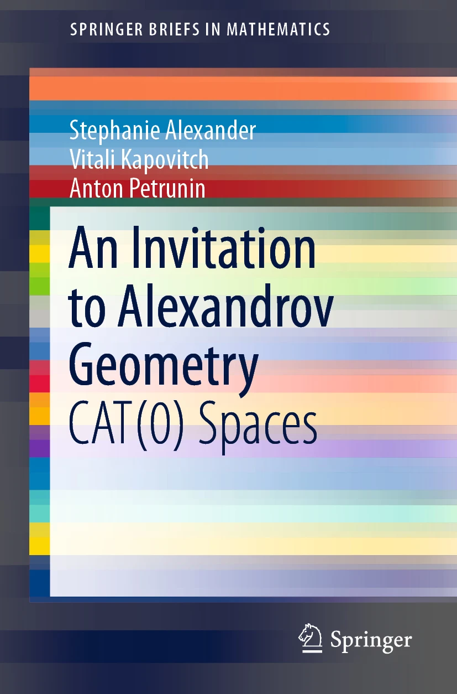

Links: Published version - Erratum - Slightly updated version - Old CC BY-SA version - Source files at GitHub - Draft of its second edition
The idea is to demonstrate the beauty and power of Alexandrov geometry by reaching interesting applications and theorems with a minimum of preparation. These notes arise as an offshoot of the book on Alexandrov geometry we have been writing for a number of years. The notes were shaped in a number of lectures given by the third author.
Here is the list of topics in the second edition.